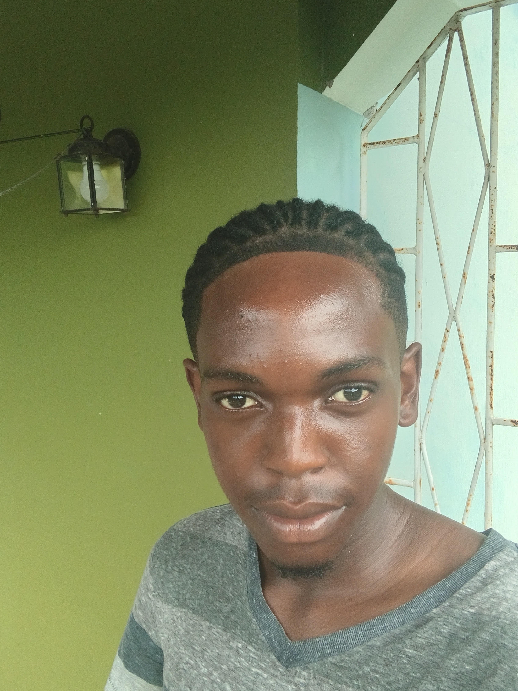

Josiah Moore
Information Technology Student & Creator of ROUK
About Me
Hello! My name is Josiah Moore. I am an 18-year-old Information Technology student currently living in Woodlands, St. George. I attended the Grenada Boys' Secondary School (GBSS), where I completed my 2025 CXC examinations, successfully passing 10 subjects.
At first, I aspired to become a paleontologist due to my fascination with prehistoric life. However, recognizing my financial situation, I decided to pursue Information Technology as an effective pathway to build myself up, gain valuable technical skills, and ultimately work toward attaining my dream job in the future.
Gaming & Content Creation
Outside of my academic studies, my main hobby right now is building my gaming YouTube channel named ROUK. I create and upload gameplay clips focused on titles like Dragon Ball Legends, Free Fire, and Call of Duty: Mobile.
Frequently Asked Questions
ROUK is my gaming YouTube channel and online brand where I publish short-form gameplay clips, summon showcases, and strategy guides for mobile games like Dragon Ball Legends and Call of Duty: Mobile.
My coursework covers algorithms, data structures, C++, Java, web development with HTML5, CSS3, and JavaScript, networking, and database management systems.
Featured Online Image